I am a Research Scientist at Netflix, where I work to push the boundaries of entertainment through AI innovation, particularly in video games. Previously, I received a PhD at MIT advised by Justin Solomon, a B.S. in Computer Science and Mathematics and an M.S. in Mathematics, both at Stanford University.
My research centers on two questions at the intersection of AI and games:
AI-Powered Game Experiences: What new, subversive forms of interaction become possible when AI is not merely used to build a game, but runs within it—responding, adapting, and creating alongside the player?
Games as an AI Research Frontier: What unique AI research problems emerge in games? Can we teach AI to understand and emulate human players—and ultimately to model what makes a game fun?
Publications
Video4Spatial: Towards Visuospatial Intelligence with Context-Guided Video Generation
Conference on Computer Vision and Pattern Recognition (CVPR 2026) Findings, Denver, Colorado
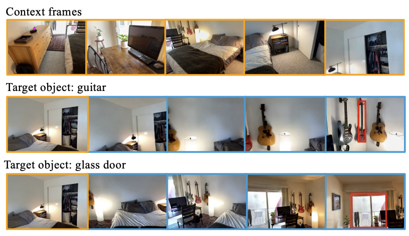
Correctness-Guaranteed Code Generation via Constrained Decoding
Oral Presentation
Conference on Language Modeling (COLM 2025), Montreal, Canada
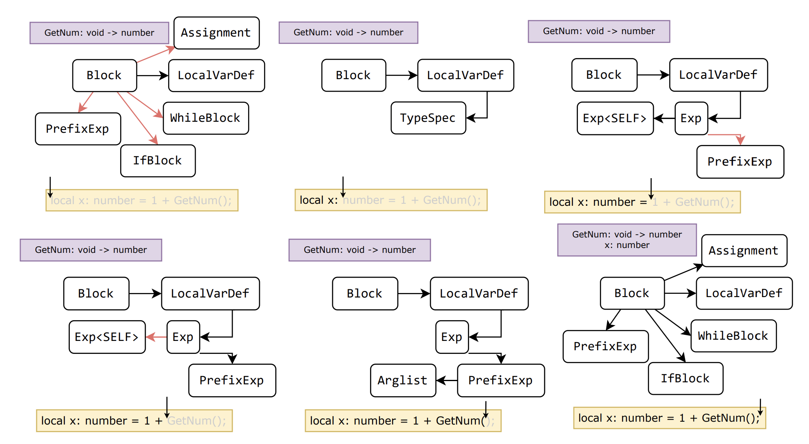
Go-with-the-Flow: Motion-Controllable Video Diffusion Models Using Real-Time Warped Noise
Oral Presentation
Conference on Computer Vision and Pattern Recognition (CVPR 2025), Nashville, TN
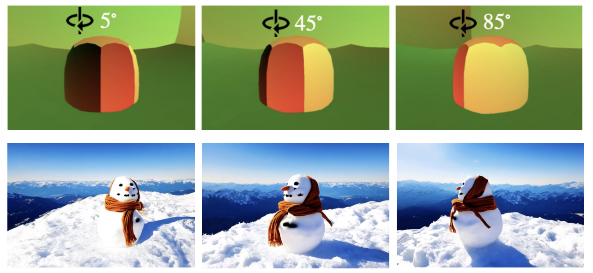
Infinite-Resolution Integral Noise Warping for Diffusion Models
Conference on Learning Representations (ICLR 2025), Singapore
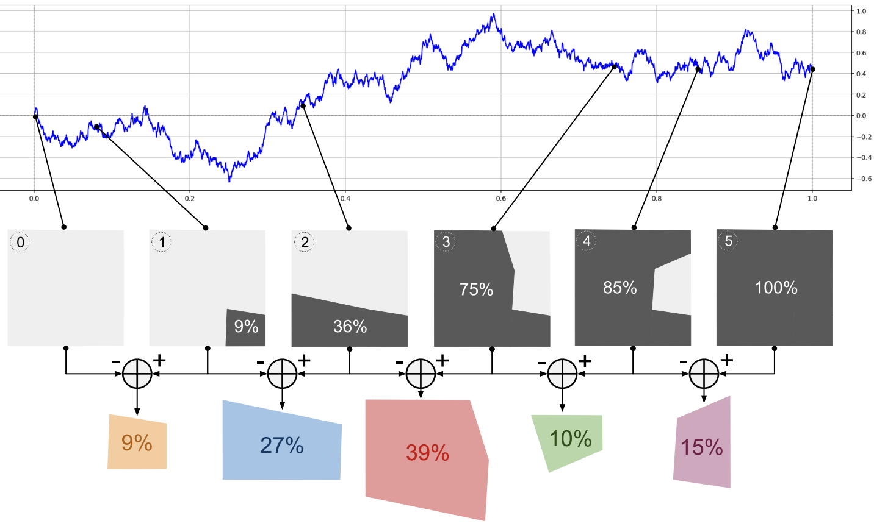
Debiased Distribution Compression
International Conference on Machine Learning (ICML 2024), Vienna
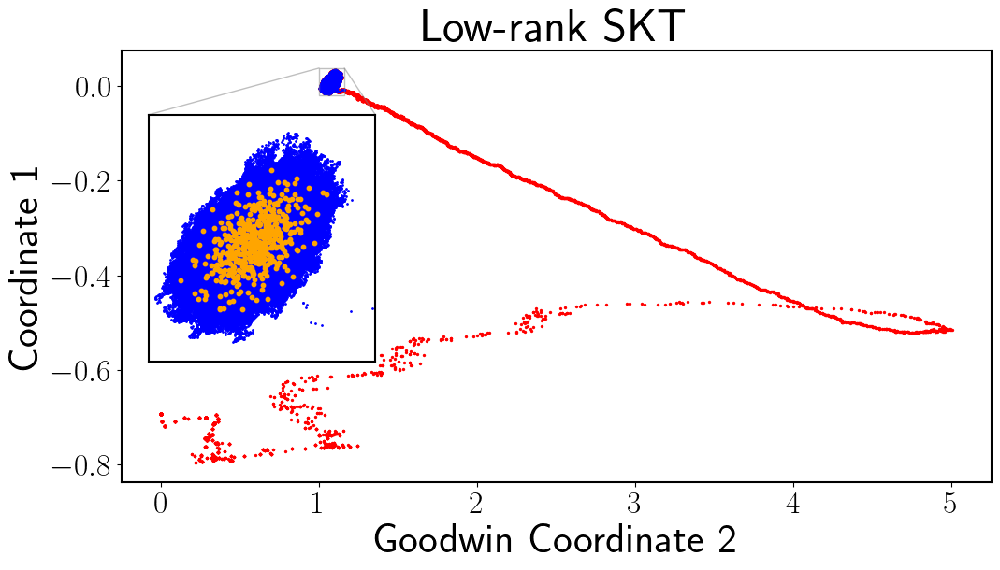
Self-Consistent Velocity Matching of Probability Flows
Conference on Neural Information Processing Systems (NeurIPS 2023), New Orleans, LA
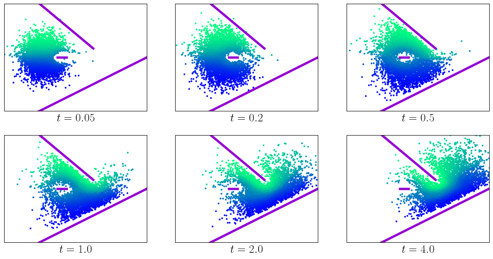
Sampling with Mollified Interaction Energy Descent
Conference on Learning Representations (ICLR 2023), Kigali
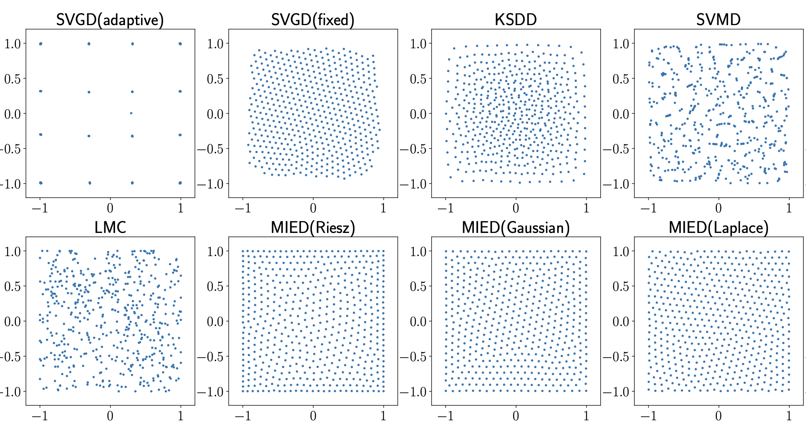
Learning Proximal Operators to Discover Multiple Optima
Conference on Learning Representations (ICLR 2023), Kigali
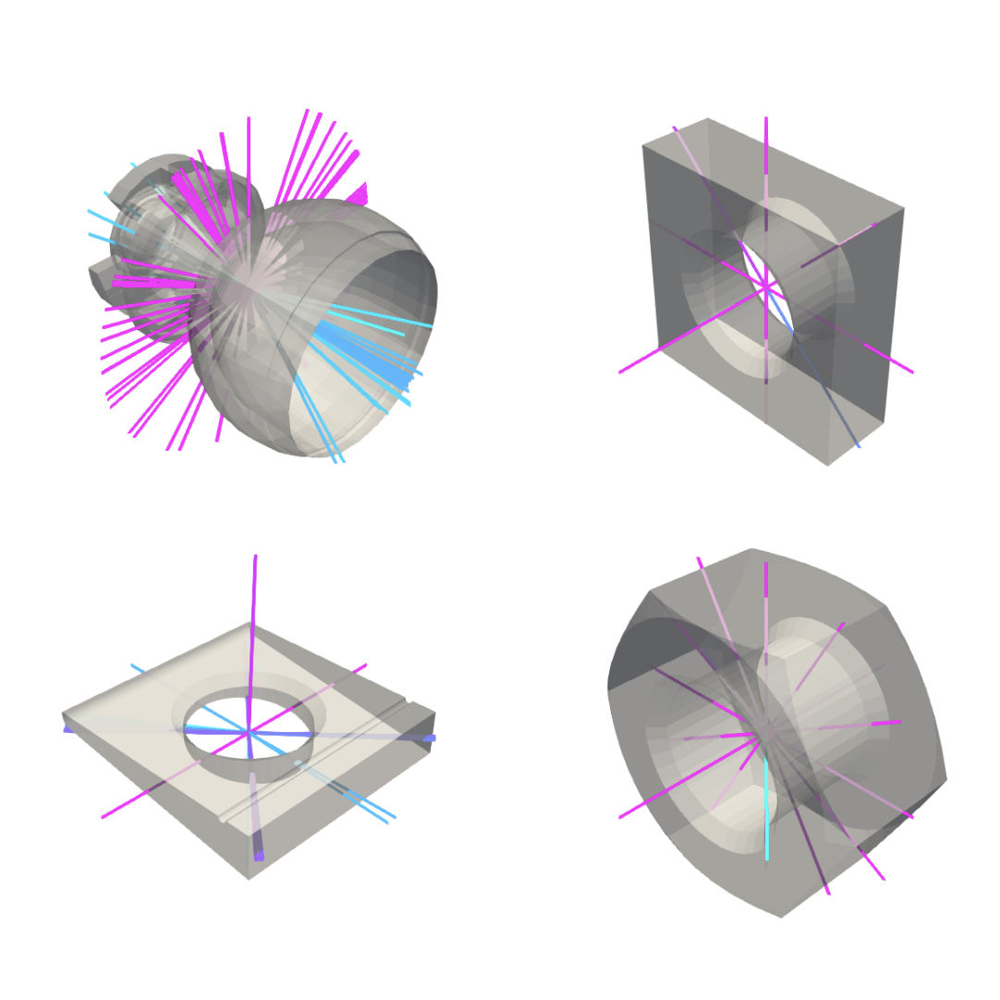
Wasserstein Iterative Networks for Barycenter Estimation
Conference on Neural Information Processing Systems (NeurIPS 2022), New Orleans, LA
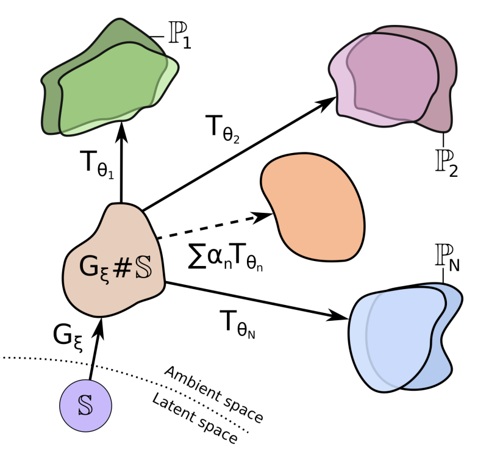
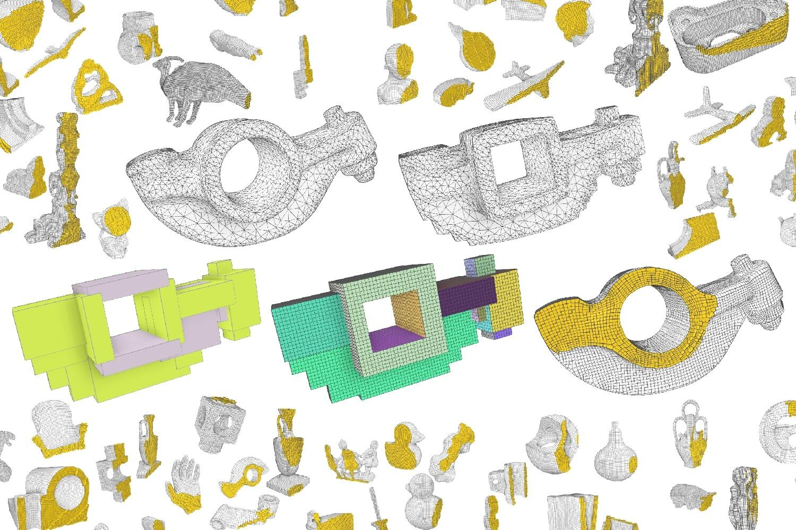
Do Neural Optimal Transport Solvers Work? A Continuous Wasserstein-2 Benchmark
Conference on Neural Information Processing Systems (NeurIPS 2021), online
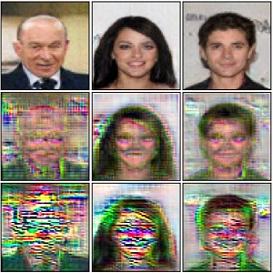
Large-Scale Wasserstein Gradient Flows
Conference on Neural Information Processing Systems (NeurIPS 2021), online
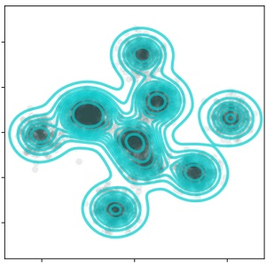
Continuous Wasserstein-2 Barycenter Estimation without Minimax Optimization
Conference on Learning Representations (ICLR 2021), online
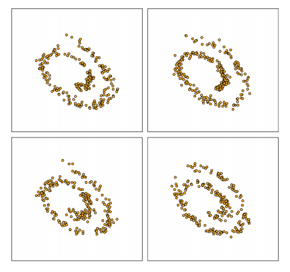
Continuous Regularized Wasserstein Barycenters
Conference on Neural Information Processing Systems (NeurIPS 2020), online
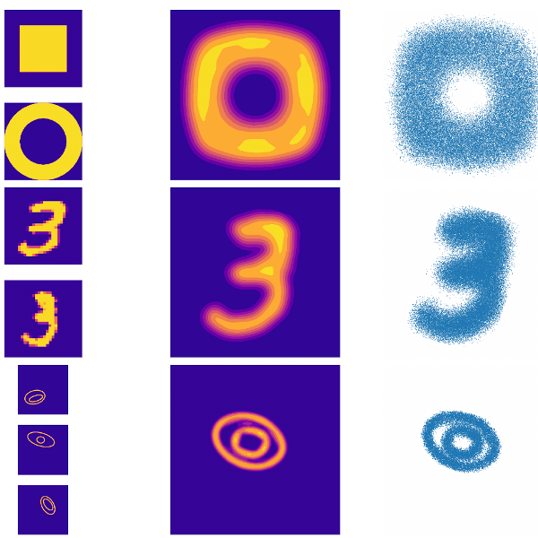
Supervised Fitting of Geometric Primitives to 3D Point Clouds
Oral Presentation
Conference on Computer Vision and Pattern Recognition (CVPR 2019), Long Beach, CA
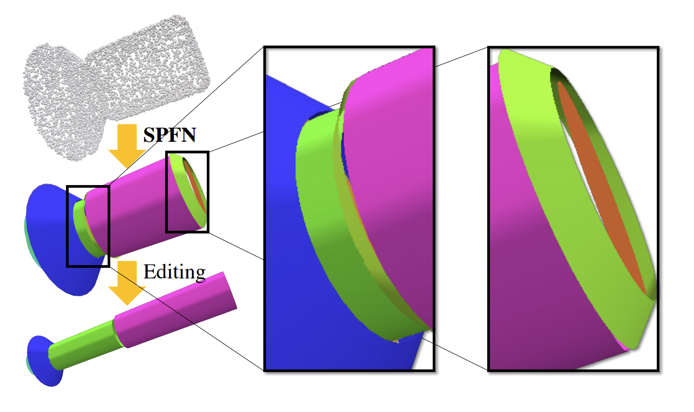
Branching Rules of Classical Lie Groups in Two Ways
Undergraduate honors thesis. Stanford University, 2018
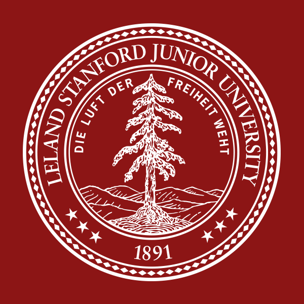